Here are a few technical challenges that I managed to handle. Hopefully, this may be useful as “tips and tricks” for future rendering competition challenges.
Code
- Alpha Masking for transparent object.
In implementing our alpha masking, instead of doing the mask as binary (Color(0.f) == false), I tried to implement the alpha masking value as the probability of hitting the object (credits to Alex). Even though I ended up not using it, it produces a transparent result and is quite good at simulating transparent objects. 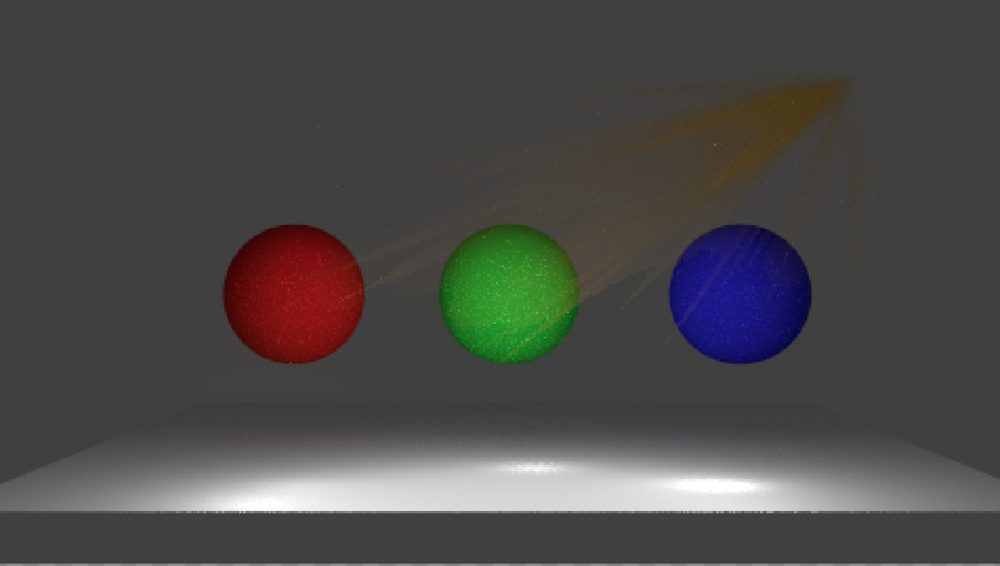
- Understanding Thinlens idea.
In order to understand how thinlens works, I re-modeled the camera into a pinhole model (with a reversed image). And then, after figuring out that implementing the thinlens is quite easy, I just need to remodel the original camera to match the necessary setup. Also, PBRT can be somewhat confusing, but it is still a good idea to read it thoroughly. 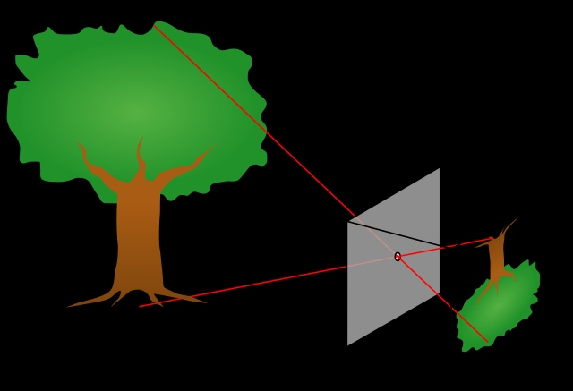
- Bloom effect.
The implementation and data logic for the bloom effect took some time, as it is a bit complicated to implement in C++ (compared to Python, etc.). So the PBRT is quite a good reference, straightforward (like how to calculate each small patch, calculate the convolution, etc.), and very easy to implement. Also refer to a topic below (Use Blender for making a “feature simulation” to simulate features), this is one simulation to know how it really works. It is highly recommended to do it and simulate it by following the implementation resource. 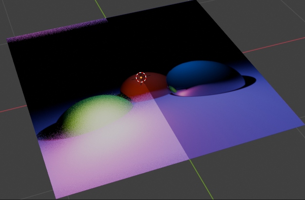
- Understanding how Halton works.
Initially, the implementation is rather confusing since there are several methods described on the PBRT website. I also tried to integrate the permutation method for the halton, and it turned out to be pretty complicated to just integrate it directly from the PBRT codebase and full of errors. It turns out that the actual method is quite simple and can be solved based on watching several useful online videos explaining how the Halton sampler works. Either way, sometimes the wrong method leads to more interesting artifacts (image) that are somewhat more promising but not recommended. 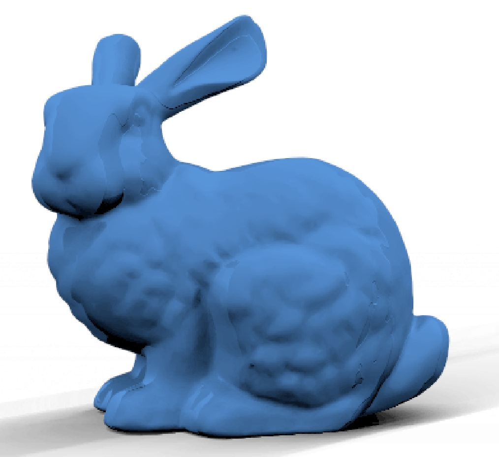
- Fog effect.
One of the very clever tricks that just “works”. So basically, to give a sense of "mysteriousness," I need some volumetric fog stuff to simulate in my scene. One thing that makes sense to me is that in real life, fog’s density is literally based on how far we are from an object. In this sense, using our path tracer, we only need to take the distance (its.t) divided by some predefined maximum length to produce a “fog” volumetric effect. Multiplying the ratio with the fog’s color would create a rather nice-looking fog and add to the mystery in our scene. Also, this was inspired by Blender’s cycle render feature, in which it may combine and mix colors and ratios based on how we want them to be, as well as from Blender’s “Mist” rendering result. It's quite a nice idea and a good trick. 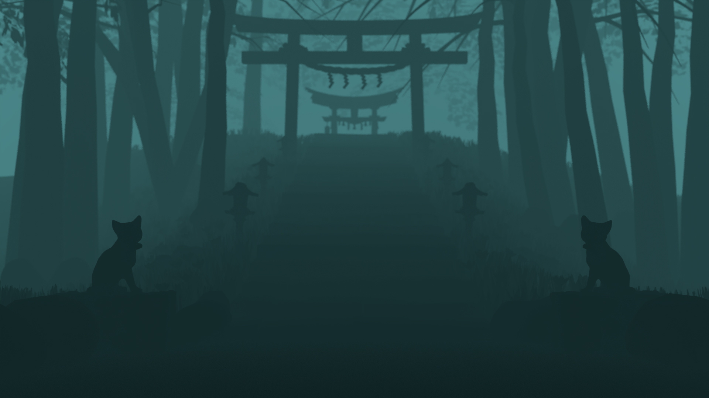
- Rendering for testing and benchmarking.
For benchmarking purposes, we basically have to simulate the effects by turning them on and off. With the high number of variations in high resolution (such as the bloom effect that uses a constant radius size), this will take quite a lot of time. So I basically ignore several areas (giving constant or zero return in certain ray.x, ray.y, or ray.z areas) that are not “important” to show in the simulation result and thus reduce the time while keeping high quality of renders with a high number of iterations. Basically, it took only a few minutes to collect high-quality results.

- Use Blender for making a "feature simulation" to simulate feature.
For this one, I basically found a playlist named Ray Tracer with Blender Math Nodes with four 15-minute videos on YouTube by georg240p that explains about the ray-tracing pipeline that is very similar to ours. I ended up following the tutorial, which is very helpful in simulating several features to develop, such as normal mapping and bloom (not included in the video, but the way to develop the tool to simulate ray tracing definitely helps our understanding). 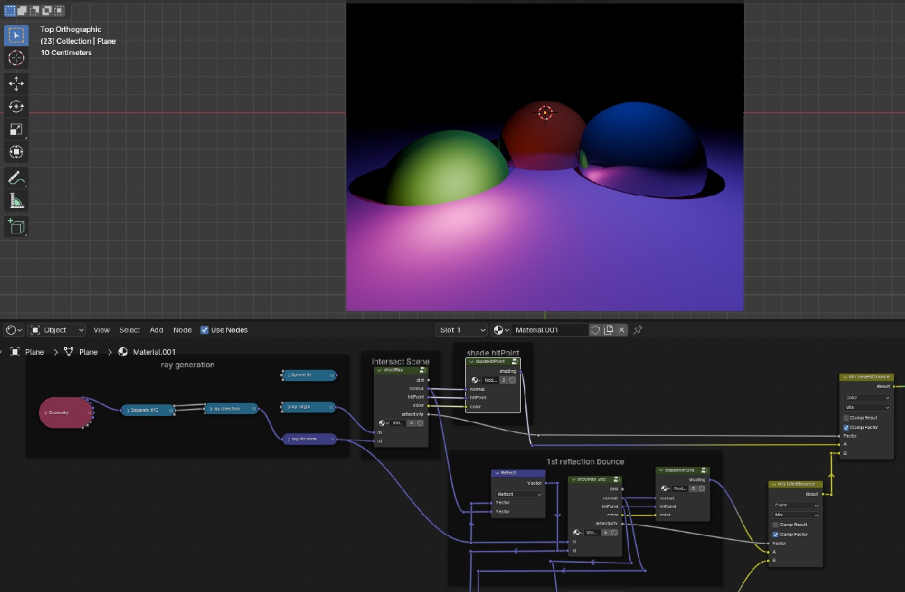
- How good OpenImageDenoising, Bloom, and Thinlens implementation would be?
All of these features can be simulated using Blender directly from the rendering and composition setup. Therefore, we are able to know if a feature would look good in our scene.
Scene Design
Some of the design challenges already mentioned in “Scene” section (particle system and portal), and in this page “Challenges → Code” part (fog effect). Here are some additional stuffs that could also be useful in designing our scene:
- Artistic design style problem and repair incorrect UV.
Finding similar artistic designs from freely available sources is really hard, but anyway, when you’re able to get the 3D model, it is possible to change the texture to be anything you want. Sometimes the UV mapping is not correct due to simply being incorrect (not as we wanted) or when we try to apply a different texture. One simple way is to select the object in edit mode, then select “Smart UV Project." Blender will automatically remap it for you. It saves a huge amount of time. 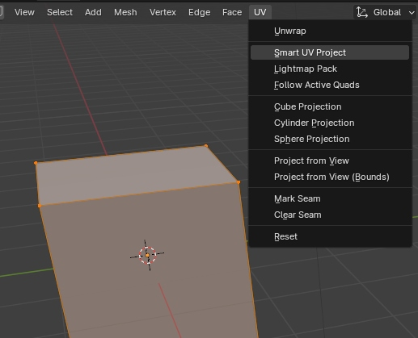
- Particle system and how to efficiently generate them.
This is a similar topic as the previous part (Scene Building), in which I utilize the weight paint to mark where the particles will be spawned. It simplifies the process, and there is no need to remove wrongly placed particles. 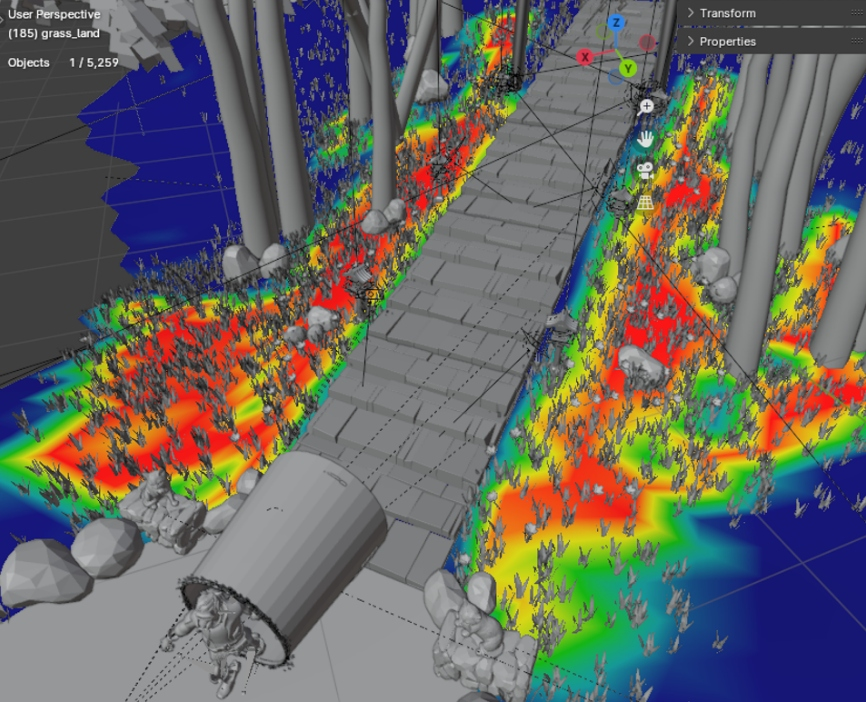
- Grass pattern.
For our grass pattern implementation, I initially tried to rely on alpha masking to spawn grass on the field, but it turns out that using alpha masking too much would result in “dark areas” of an image instead. This is probably because of stacking alphas that would not properly work as expected. At the end, I simply use low-poly grass instead. This is an implementation using 5000 spawned grasses. 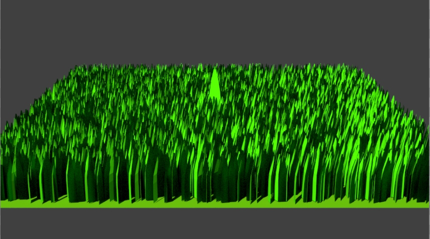
- Portal and fake perception.
This is one of the most important parts of my scene. In which I have to make a portal and try to make it not look like an object. I utilized the array modifier in Blender, and combined with the boolean modifier, the portal can be simply generated and aligned with our point of view, making it somewhat look like two different scenes in the same place. 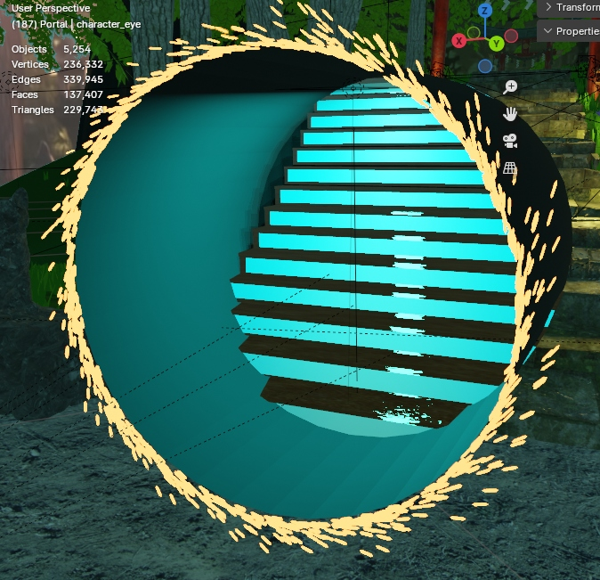
- Reducing mesh number for faster iteration.
Lots of provided models from suggested sources are provided with a huge amount of faces. This could make Blender run really slowly, unless you try to reduce the number of faces using the decimate modifier in Blender. The reverse is also possible (increase the number of meshes) by using the subdivision surface modifier. 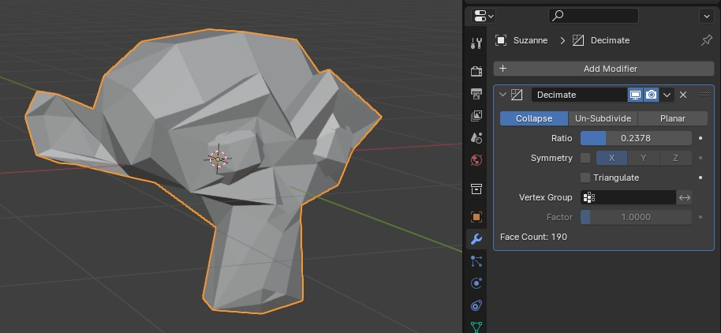
- Project structuring for both blender and lightwave xml.
Structuring the project might be annoying, but it saves a huge amount of time, especially when the exporter could not have a proper naming or labeling identity (the objects would be like Cube1.ply, Cube2.ply, etc., and the lights would have no identity at all). So changing the code structure and finding the specific objects is necessary to be able to make quick modifications to the result. (Yes, I basically re-map all objects by matching them with the exact coordinates in Blender.). One thing that might happen is that sometimes we want a quick modification of the scene, and this would help a lot.
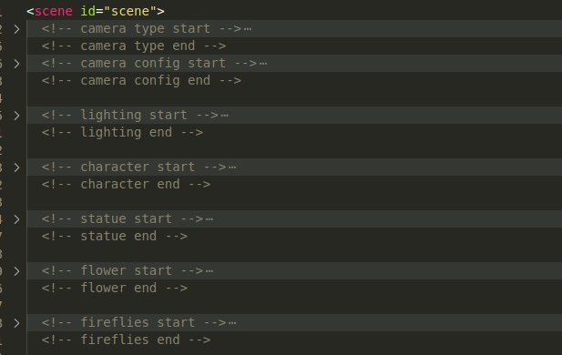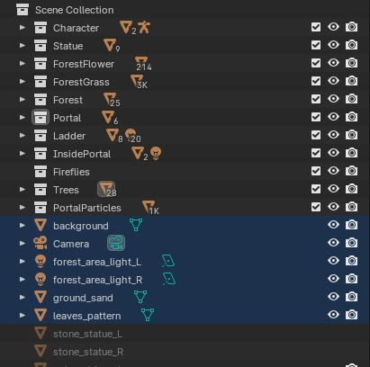